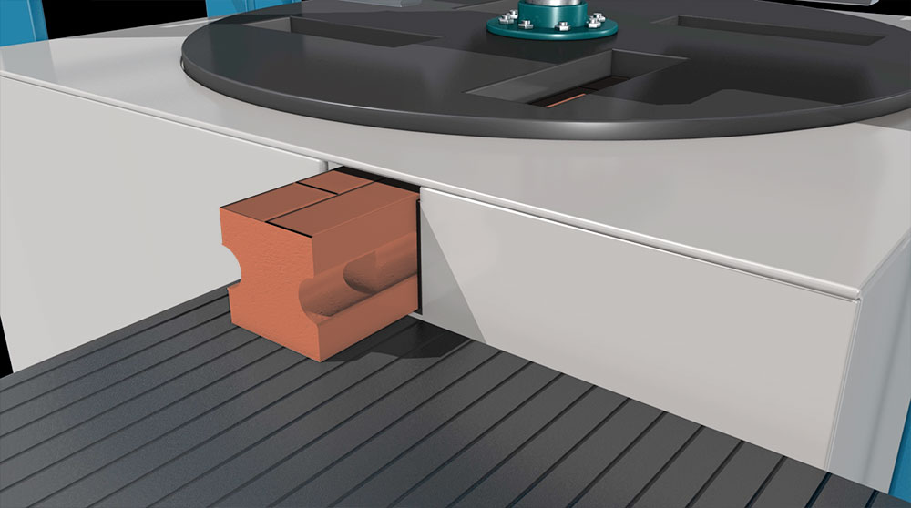
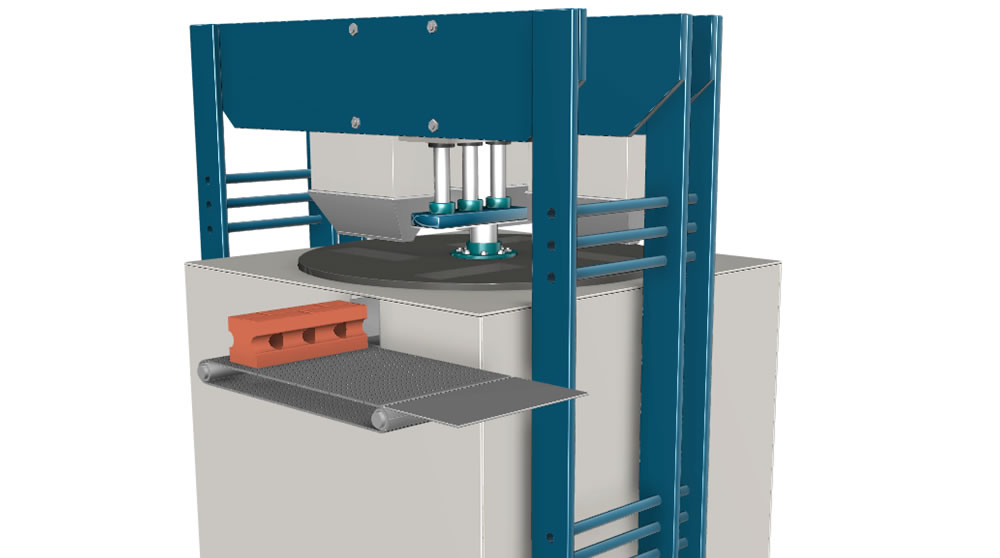
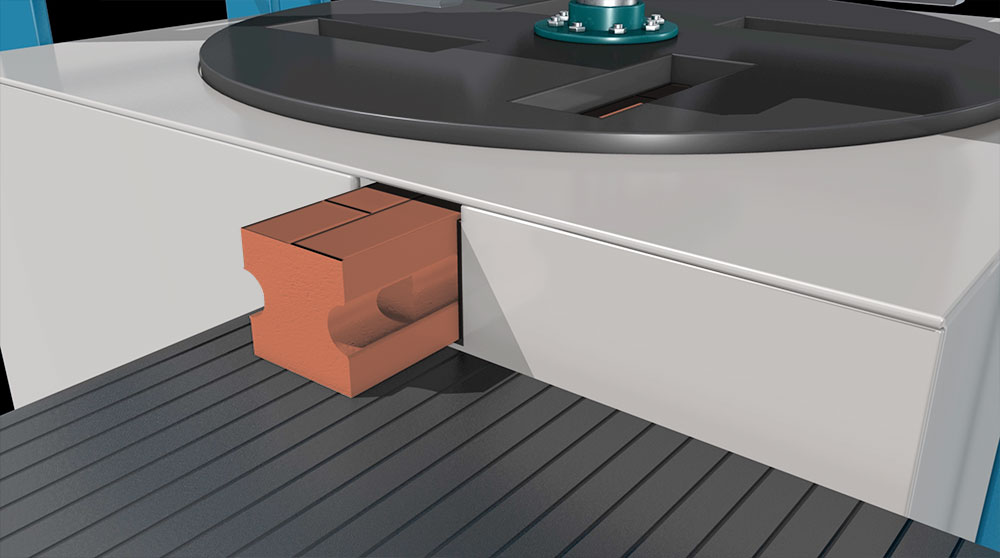
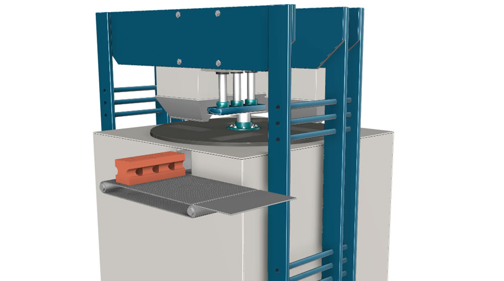
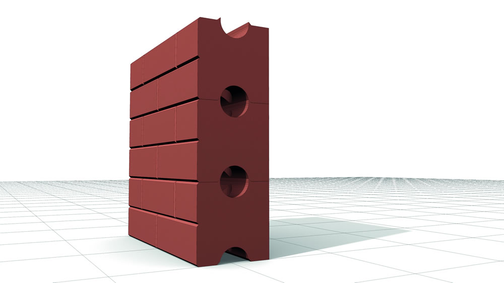
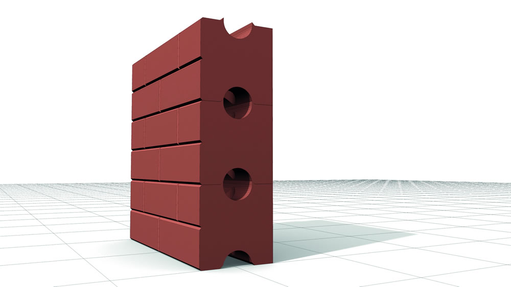

OUR PHILOSOPHY
CATALYST is an innovative start-up that adopts sustainable principles of architecture, placing the focus on respect for the territory and soil consumption. It prioritises recycling inert materials deriving from the demolition of existing buildings and their reconstruction, on-site, as well as the use of residues from stone excavation. It applies an innovative on-site production system for the materials required for new construction, it leads to high energy savings, it prevents C02 emissions resulting from processing and transportation.
Products and services
Catalyst offers a wide range of products and services in three main areas

RI-BLOCK bricks
RI-BLOCK meaning RECYCLING BLOCK, provide the design and development of new processes and products for sustainable building. It is an innovative system where all the elements necessary for construction are made directly on-site.
This is done using the materials discarded from demolition work, which are pressed into specific moulds, creating an on-site supply chain and saving on bricks, cement and mortar (highly energy-consuming products).
CARRARA-BLOCK BRICKS
The same recycling methods for inert materials developed for the Ri-Block are used to recycle Carrara marble processing scraps. Excavation dust from ongoing work in the Apuane quarries is also pressed into the moulds. The result is a beautiful white brick that can be left exposed for architectural purposes or used for ordinary load-bearing and curtain walls instead of the usual fired clay bricks. This all saves energy and produces less CO2.

DOUBLE-BLOCK project
With the same patented mixtures of materials, compressed in a suitable mould and handled by a specific machine, the product is formed into a particular shape fitted with ducts for the insertion of systems, and features 2 different exposed sides. The resulting walls have 2 finished sides, inside and out, obtaining a new, easier-to-use and quick construction system.
USING THESE PRODUCTS RESULTS IN A NEW CONSTRUCTION SYSTEM
Catalyst products and designs start from a cultural approach that identifies itself with sustainable building, energy savings and recovering debris that would otherwise be classified as waste.
Catalyst is based on ecological principles and the sustainable development concept by considering the “man-nature-function” concept in its broadest sense.
Catalyst manages projects that guarantee “high-quality living” in all its forms, focusing on:
- safeguarding health and psycho-physical well-being.
- reducing every type of pollution, emission, waste.
- urban regeneration that can be re-used at the end of its life.
Catalyst also pays the utmost attention to all aspects that concern the quality of life inside a building. It uses particular building techniques and solutions in line with this principle and favours the use of on-site and local materials.
Intervention plans are characterised by a holistic vision of the designs that embraces a ‘multidisciplinary method’ to assess all the elements of sustainable architecture.
Catalyst employs a minimalist approach aimed at limiting land loss and using material discarded from demolition work and nearby natural resources.
It pays the utmost attention to energy consumption, bioclimatic approach, insulation of the building envelope, energy sources and system efficiency.
It uses ecological materials, choosing natural products and evaluating the different environmental impacts produced throughout all the steps of the processing cycle.
It manufactures on-site, selecting materials of known origin which have been extracted and produced in the same environment and considers recycling as the basic principle of sustainability concerning both individual items made at that moment and the entire building, which will be demolished once it reaches the end of its life.
PHASE 1: DEMOLITION
Demolished building
Storage demolition debris
PHASE 2: DEBRIS PROCESSING
Grinding debris
Chemical controls for salubrity
Mixing with alloying elements

PHASE 3: PRODUCTION
Manufacturing plant

Storage
Construction site


 




 
